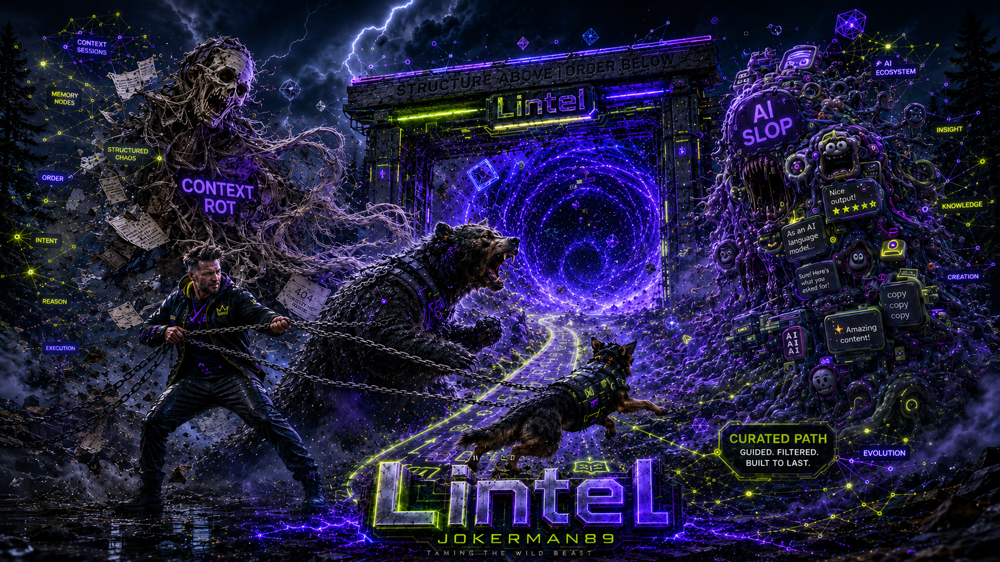

Lintel
AVAILABLEThe complete, company-neutral session harness.
Open the Lintel repository ↗WORKFLOWS · MEMORY · VERIFICATION
“We agreed on this three hours ago.”
Your AI doesn’t have to start over every time.
Lintel gives your coding agent a reusable way to scope, build, review and remember the work. In the tools you already use.

✓ Intent recovered
✓ Decisions available
→ Next useful action
Start light. See the system. Inspect the evidence. Take the optional deep dive when you want the file paths.
Context rot, reusable method, a same-prompt comparison and a practical team pilot.
Lintel, CAIP Pack, Core and Benchmark. Four different jobs, one connected approach.
Skills, agents, hooks, storage, fresh-session recovery and keeping repositories useful.
The files are the product. Follow the connections, see where knowledge lives and check what is actually wired up.
Browse the full technical reference →Unreleased development catalogue at snapshot 275a354. Declared content is not proof of execution in every client.
Two prepared dashboards. Identical task, data and stakeholder answers.
Compare the output, then trace the decisions behind it.
Real builds. Synthetic data. One run per arm.
A useful exhibit — not a measured productivity claim.
Keep the full harness, adapt a smaller shell to a customer case, and measure whether it earns its place.
Download this site + demos ↓Offline kit · browser demos · speaker notes
Website source & update instructions ↗
The complete, company-neutral session harness.
Open the Lintel repository ↗MS Employee in CAIP. The role and organization context, kept separate from the universal core.
A stripped-down shell to build a specific customer harness. Explicit, on-demand workflows inside the customer’s existing coding app — including desktop GitHub Copilot.
For human-driven cases that don’t need a hosted agent or a dedicated app. Hosted execution and platform controls still have their own role.An evaluation package to compare accepted outcomes, interventions, recovery and cost. The prepared lab above is available today.